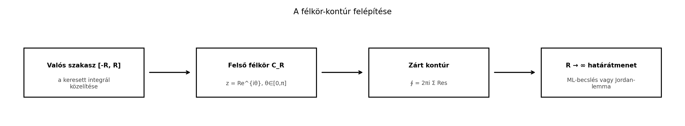

Az analízis egyik meglepő tapasztalata, hogy sok valós integrál,
amelynek a kiszámítása valós eszközökkel nagyon nehéz vagy egyenesen
reménytelen, a komplex számok segítségével néhány sorban elvégezhető.
Ilyen például a
integrál: a primitív függvénye parciális törtekre bontással és arctg,
logaritmus kombinációjával megtalálható, de a hosszadalmas. Ezzel
szemben a reziduum-tétel egyetlen zárt görbén vett komplex integrállá
alakítja a feladatot, és a válasz a pólusok reziduumainak összegéből
adódik.
Az alfejezetben három nagy módszercsaládot tanítunk meg:
racionális függvények integrálja a teljes valós egyenesen
félkör-kontúrral;
intervallumon vett trigonometrikus integrálok
helyettesítéssel;
Fourier-típusú integrálok
súllyal, a Jordan-lemma segítségével.
A félkör-kontúr ötlete a következő. A keresett valós integrál az
szakaszon vett integrál
határértéke. Ezt a szakaszt egy felső félkörrel egészítjük ki zárt
görbévé, amelyre a reziduum-tétel alkalmazható. Ha a „felesleges”
félkörön vett integrál nullához tart, a zárt görbe integrálja éppen a
keresett valós integrál határértéke lesz.

A félkör-kontúr felépítése - A valós
integrált zárt kontúrintegrállá egészítjük ki; a felesleges félkörív
nullához tart, a zárt görbére a reziduum-tétel
alkalmazható.
Az ábra a gondolatmenetet mutatja: a valós integrálhoz hozzáadunk egy
olyan görbét, amelynek járuléka eltűnik, így a reziduum-tételből
megkapjuk az eredeti valós integrál értékét.
Az alábbi ábra a fejezet három kontúrtípusát mutatja a bejárási
iránnyal és a pólusok helyével.
Statikus változat (mint a PDF-ben)
A félkör-, a bemélyedéses és a kulcslyuk-kontúr
():
(1)
és a felső
félkör, az
két felső pólusa belül; (2) a
-beli
pólust óramutató szerint bejárt kis félkör
()
kerüli ki; (3) kulcslyuk az ágvágással a pozitív valós tengelyen, a
felső parton
,
az alsón
,
pólus a
-ben.
Számított értékek.
34.3.3 A félkör-kontúr és
racionális függvények valós integrálja
Tétel. Legyen
racionális függvény, ahol
valós együtthatós polinomok, és tegyük fel, hogy
minden
esetén;
.
Ekkor
ahol az összegzés a felső félsíkban lévő pólusokra történik.
Bizonyítás.Bizonyítási terv: a
szakaszt felső félkörrel zárjuk le, a félkörön az ML-becsléssel mutatjuk
meg, hogy az integrál eltűnik, ezután alkalmazzuk a reziduum-tételt.
Legyen
a felső félkör:
,
.
Tekintsük a zárt görbét, amely a
valós szakaszból és
-ből
áll. A reziduum-tétel szerint
Az ML-becslés szerint
ahol
.
A fokszám-feltétel miatt létezik olyan
állandó, hogy
elég nagy
esetén. Így
,
tehát
A határátmenetben a valós szakasz integrálja a keresett improprius
integrált adja, a felső félsíkban lévő pólusok összessége pedig éppen a
tételben szereplő összeg. ∎
Figyelem. A fokszám-feltétel nélkül a félkörön vett
integrál általában nem tart nullához. Például az
integrál divergens; a félkör-kontúr módszer itt nem alkalmazható
közvetlenül.
34.3.3.1 Kidolgozott példa:
A fenti tétel feltételei teljesülnek:
,
,
.
A nevező gyökei
,
tehát
A felső félsíkban két gyök van:
Mindkettő egyszeres pólus, így
Mivel
,
ezért
,
tehát
Ezért a reziduumok összege:
Számoljuk ki:
Így az integrál:
Ellenőrzés: az eredmény pozitív, ami szükséges,
hiszen az integrandus pozitív. A numerikus érték körülbelül
.
34.3.4 Trigonometrikus integrálok:
helyettesítés
A
intervallumon vett
alakú integrálok, ahol
racionális függvény, az egységkörön vett komplex integrállá
alakíthatók.
Recept – trigonometrikus integrál reziduumokkal:
Helyettesítsünk:
,
ekkor
az egységkör
pozitív irányú bejárása.
Használjuk az összefüggéseket:
Az integrál:
Számítsuk ki az egységkörön belüli pólusok reziduumait, és
alkalmazzuk a reziduum-tételt.
34.3.4.1 Kidolgozott példa:
Alkalmazzuk a receptet. A helyettesítés után:
Ezért
Mivel
,
az integrandus:
A nevező gyökei:
Ebből csak
esik az egységkör belsejébe, mert
kívül van. A
egyszeres pólus, ezért
A reziduum-tétel szerint:
Ellenőrzés: az integrandus pozitív, így az eredmény
pozitív. Numerikusan
.
34.3.5 Fourier-típusú integrálok és
a Jordan-lemma
Gyakran találkozunk
alakú integrálokkal, ahol
és
racionális függvény. Ilyenkor a félkör-kontúr használható, de az
tényező miatt a félkörön vett becslést finomítani kell: a Jordan-lemma
adja a megfelelő eszközt.
Lemma (Jordan-lemma). Legyen
,
és tegyük fel, hogy
folytonos az
zárt felső félsíkban, kivéve esetleg véges sok pontot. Ha
akkor
ahol
a felső félkör
,
.
Bizonyítás.Bizonyítási terv:
először
paraméterezésével becsüljük az
abszolút értékét
-val,
majd a
egyenlőtlenséget használjuk, amely a
intervallumon igaz.
Paraméterezzük a félkört:
,
.
Ekkor
Mivel
az abszolút értéke
.
Így
A szimmetria miatt
.
A
-n
,
ezért
Számoljuk ki az utolsó integrált:
Tehát
A feltétel szerint
,
így a félkörön vett integrál is nullához tart. ∎
Tétel (Fourier-típusú integrál). Legyen
racionális függvény, ahol
valós gyök nélküli,
,
és legyen
.
Ekkor
ahol az összegzés a felső félsíkban lévő pólusokra történik.
Bizonyítás. A félkör-kontúrt használjuk. A
szakaszon a valós integrál közelítése, a felső félkörön a Jordan-lemma
adja, hogy a járulék nullához tart, mert
és
miatt
.
A reziduum-tételből a határátmenet után kapjuk az állítást. ∎
Megjegyzés. Ha
,
akkor a
alsó félkört, illetve az alsó félsíkot kell használni, mert csak ott
csökken az
kitevő; ekkor a lezárt görbét a valós tengelyen
irányban az óramutató járásával megegyezően járjuk be, ezért
(például
).
Ha
,
az előző alfejezetben tárgyalt racionális esetre jutunk.
34.3.5.1 Kidolgozott példa:
Az integrál értékét úgy számítjuk ki, hogy az
integrált tekintjük, és vesszük a valós részét, mivel
.
Legyen
.
A nevező gyökei
,
ebből a felső félsíkban
van. A
egyszeres pólus, ezért
A fenti tétel szerint:
Mivel ez az érték valós, és
páratlan, így
Ellenőrzés: pozitív, ami szükséges, mert az
integrandus
közelében pozitív, és a negatív részeket a nevező súlyozza.
34.3.6 A Dirichlet-integrál:
bemélyedéses kontúr
Az
integrál (Dirichlet-integrál) azért érdekes, mert az integrandus
-ban
folytonosan kiterjeszthető, de a
függvény nem abszolút integrálható; konvergenciáját az Improprius integrálok alfejezetben láttuk. Az
értékét nem lehet közvetlenül a fenti módszerrel számítani, mert az
függvénynek pólusa van a valós tengelyen, a
pontban. Ezt a pólust egy kis félkörrel megkerüljük: ezt nevezzük
bemélyedéses (indent) kontúrnak.
Tétel.
Bizonyítás.Bizonyítási terv: az
függvényt integráljuk egy olyan zárt görbén, amely a
szakaszból, a
sugarú felső kis félkörből, a
szakaszból és a nagy felső félkörből áll. A görbén belül nincs
szingularitás, ezért a teljes integrál nulla. Ezután az
és
határátmenetben a kis félkör járuléka
-t
ad, a nagy félköré nullát, a valós szakaszoké pedig
-t.
Legyen
,
,
és tekintsük a következő pozitív irányítású zárt görbét: a valós
tengelyen
,
majd a felső kis félkör
sugárral
(a pólust megkerülve), majd a valós tengelyen
,
végül a nagy felső félkör
.
A görbén belül az
függvény holomorf, így
A két valós szakasz összege: az elsőben
helyettesítéssel
tehát
A nagy félkörön
,
:
A Jordan-lemma
,
esetén adja, hogy ez nullához tart, mert
.
A reziduumos módszer nemcsak az előző három típusra működik. Ha az
integrandus nem egyértelmű komplex függvény (például
,
ahol
),
akkor ágvágásos kontúrt kell használni. Ennek teljes
tárgyalása a kulcslyuk-kontúrok általános elméletéhez tartozik, ezért
itt csak a módszer ízét mutatjuk meg.
Tekintsük az
integrált. A komplex függvény
,
ahol
az
ággal (nem a főággal!); a vágás így a pozitív valós tengelyen van. A
kulcslyuk-kontúr a pozitív valós tengely felső és alsó partján halad, a
körüli kis körrel és egy nagy körrel összekötve. A felső parton
,
az alsó parton
.
A pólus a
pontban van, ahol a reziduum:
A reziduum-tételből a nagy és kis körök járuléka eltűnik, és a két
part hozzájárulása:
Mivel
(hiszen
),
rendezve:
Ezt egyszerűsíthetjük:
így
Ez az eredmény fontos lesz például a Gamma-függvény reflexiós
formulájánál, de azt ebben a könyvben csak érintjük.
34.3.8 Számolási recept a
reziduumos valósintegrál-módszerekhez
1. Racionális függvény a teljes egyenesen.
Ellenőrizzük:
minden valós
-re,
.
Írjuk fel a felső félsíkban lévő pólusokat.
Számítsuk ki a reziduumokat.
Az integrál
-szer a felső félsíkbeli reziduumok összege.
2. Trigonometrikus integrál
-n.
Helyettesítsünk
,
.
Fejezzük ki
és
értékét
-vel.
Határozzuk meg az egységkörön belüli pólusokat.
Az integrál
-szer a belső reziduumok összege.
3. Fourier-típusú integrál
-szel.
Ha
,
használjunk felső félkört; ha
,
alsó félkört.
Ellenőrizzük, hogy a racionális rész legalább
rendben eltűnik.
Alkalmazzuk a Jordan-lemmát a félkörív becslésére.
Az integrál
esetén
,
esetén
(az alsó kontúr negatív irányítású).
34.3.9 Valós életbeli alkalmazás:
Lorentz-görbe alatti terület a spektroszkópiában
A spektroszkópiában a Lorentz-féle vonalprofil az egyik leggyakoribb
illesztési forma. Ha egy spektrumvonal központi frekvenciája
,
félérték-félszélessége (HWHM)
(a csúcs felénél mért teljes szélesség, FWHM,
),
akkor a Lorentz-profil:
A profil úgy van normálva, hogy a teljes területe
,
azaz
Ezt a normálást reziduumokkal is ellenőrizhetjük. Számoljuk ki a
integrált. Helyettesítsünk
;
a határok változatlanok:
A nevező gyökei
.
A felső félsíkban
van. Egyszeres pólus, reziduuma:
A félkör-kontúr tétel szerint:
Így a Lorentz-profil területe:
Értelmezés: a Lorentz-profil gyakran írja le a
természetes vonalkiszélesedést és a nyomási kiszélesedést. A
normalizálás azt fejezi ki, hogy a vonal alatti teljes spektroszkópiai
jelintenzitás a molekulák vagy atomok sűrűségével arányos;
a félérték-félszélesség (a teljes félértékszélesség
),
míg
a vonal helye. A reziduumos módszer fenti egyszerű számítása megmutatja,
hogyan válik a Lorentz-görbe a Fourier-transzformációban is fontos
modellé, mert
jellegű relaxációt ad.
Modellkorlát: a Lorentz-profil széles szárnyai miatt
nem minden spektrumvonalat ír le jól; gyakran Voigt-profilt használnak,
amely a Lorentz- és a Gauss-profil konvolúciója.
34.3.10 Python-illusztráció
A reziduumos eredményeket numerikusan is ellenőrizhetjük. A következő
kód a scipy.integrate.quad eljárást használja néhány tanult
integrál numerikus közelítésére. Ez szemléltetés, nem bizonyítás; a
numerikus eredmény kerekítési és diszkretizációs hibát tartalmaz.
Az oszcilláló, lassan lecsengő integrandusnál a sima
quad(…, np.inf) hibás eredményt ad (figyelmeztetéssel: a
cos x/(1+x^2) integrálra
,
a Dirichlet-integrálra
adódik); a weight='sin' / weight='cos' a
végtelen intervallumon a QAWF-eljárást használja, ezért a 3. és 4.
sorban ezt alkalmazzuk.
34.3.11 Tipikus hibák
A fokszám-feltétel elmulasztása racionális
integrálnál. Ha
,
a félkörön vett integrál nem feltétlenül tart nullához. Mindig
ellenőrizzük, hogy
teljesül-e.
A trigonometrikus helyettesítésnél a
elhagyása. Sokan csak a
és
formuláját írják fel, de elfelejtik a
transzformációját. A teljes integrálban mindig szerepelnie kell a
tényezőnek.
A Jordan-lemmánál rossz félsík választása. Ha
,
akkor a felső félkörön az
kitevő nem csökken, hanem nőhet; ilyenkor az alsó félkört és az alsó
félsíkban lévő pólusokat kell használni, és az eredmény
-szer
az alsó félsíkbeli reziduumok összege.
A Dirichlet-integrálnál a kis félkör irányának
eltévesztése. A pólus megkerülésekor a kis félkör iránya az
óramutató járásával megegyező, ezért az
határátmenetben
járulékot ad. Ha ellenkező előjellel vesszük, az egész eredmény előjelet
vált.
Az
tényező elhagyása a reziduumban. A reziduumot a teljes
függvényre kell számolni: például
-nél
a
pólusban
,
nem
.
Ha az exponenciálist kihagyjuk,
-t
kapunk
helyett.
34.3.12 Önellenőrzés
Igaz-e, hogy
?
Igaz-e, hogy a félkör-kontúr csak páros függvényekre
alkalmazható?
A
integrált
-val
számolva hány pólus esik az egységkör belsejébe?
Miért van szükség a Jordan-lemmára, ha az integrálban
tényező szerepel?
A Dirichlet-integrál kiszámításakor miért kell bemélyedést
használni?
Mennyi a Lorentz-profil teljes területe?
34.3.13 Megoldások
34.3.13.1 Önellenőrzés –
válaszok
Igaz. A felső félsíkban az
pólus van, reziduuma
,
így az integrál
.
Hamis. A módszer a félkör-kontúron alapul; a
valós tengelyen vett integrálnak nem kell párosnak lennie. A
félkör-kontúr a teljes
szakaszt használja, és a
határátmenetben a keresett improprius integrált adja.
Egy. A
helyettesítés után a nevező gyökei közül csak az egyik esik az egységkör
belsejébe.
Mert az
abszolút értéke a felső félkörön
,
amely a félkör széleinél nem csökken gyorsan. A Jordan-lemma az
-becslés
finomításával kezeli ezt a
viselkedését.
Mert a
pólus a valós tengelyen van, ahol az eredeti integrációs út halad. A
pólust egy kis félkörrel megkerülve a kontúron belül már nincs
szingularitás, és a reziduum-tétel alkalmazható.
5. feladat (C). Bizonyítsa be a Jordan-lemmát abban
a speciális esetben, amikor
:
mutassa meg, hogy
ahol
a felső félkör
,
.
6. feladat (D). A Lorentz-vonalprofil a
spektroszkópiában:
Számítsa ki reziduumokkal a normálási integrált:
Ha
(azaz a teljes félértékszélesség FWHM
),
adja meg a profil csúcsértékét és értelmezze, miért van szükség a
együtthatóra.
34.3.15 Megoldások
1. feladat (A). A nevező gyökei
,
ebből a felső félsíkban
van. A reziduum:
Az integrál:
Ellenőrzés: primitív függvénnyel
,
kiértékelés
.
2. feladat (A). Helyettesítsünk
,
.
Ekkor
Az integrál:
Egyszerűsítve:
A nevező gyökei:
Tehát
és
.
Csak
van az egységkör belsejében. Reziduum:
Az integrál:
Ellenőrzés: az általános
formula alapján
.
3. feladat (B). Parciális törtek nélkül
reziduumokkal. A nevező gyökei:
és
.
A felső félsíkban
és
vannak. Reziduumok:
:
:
(Az utolsó lépés:
.)
A reziduumok összege:
Így
Ellenőrzés: parciális törtekkel is
.
4. feladat (B). Helyettesítés
,
.
Az integrandus:
A nevező gyökei:
Így
és
.
Csak
van az egységkörön belül. Reziduum:
Az integrál:
Ellenőrzés: az általános formula
.
5. feladat (C). A Jordan-lemma bizonyítását követjük
az
esetben. A
félkörön
,
,
tehát
Becsüljünk abszolút értékben:
A szimmetria miatt:
A
intervallumon
,
ezért
Így
Tehát a kérdéses határérték
.
6. feladat (D). (a) A normálási integrál:
Helyettesítsünk
;
ekkor:
A pólusok
,
a felső félsíkban
.
Reziduum:
A félkör-kontúr tételből:
Tehát
A profil csúcsértéke
-nál:
Ha
,
akkor:
A
együttható biztosítja, hogy a görbe alatti teljes terület
legyen; ez a koncentráció- vagy valószínűség-értelmezéshez
szükséges.
34.3.16 Rövid összefoglaló
A reziduum-tétel hatékonyan számít ki valós integrálokat. A
félkör-kontúr módszerrel racionális függvények teljes valós egyenesen
vett integrálját számoljuk, feltéve, hogy a nevezőnek nincs valós gyöke
és
:
A
trigonometrikus integráloknál a
helyettesítés,
,
,
vezet az egységkörön vett integrálra. A Fourier-típusú integráloknál,
,
(),
a Jordan-lemma biztosítja, hogy a felső félkör járuléka eltűnik, ha
a félkörön. A Dirichlet-integrál értéke bemélyedéses kontúrral:
Ez az alfejezet klasszikus, tankönyvi anyagra épül: a félkör-kontúr,
a Jordan-lemma és a Dirichlet-integrál megtalálható a szokásos komplex
analízis tankönyvekben (például Brown–Churchill, Stein–Shakarchi). A
Python-illusztráció a scipy.integrate.quad jelenlegi
API-ját feltételezi; az API pontos argumentumait a felhasználónak
érdemes a telepített SciPy verziójához igazítania. A spektroszkópiai
adatok illusztrációként szerepelnek, nem ellenőrzött mérési adatok.